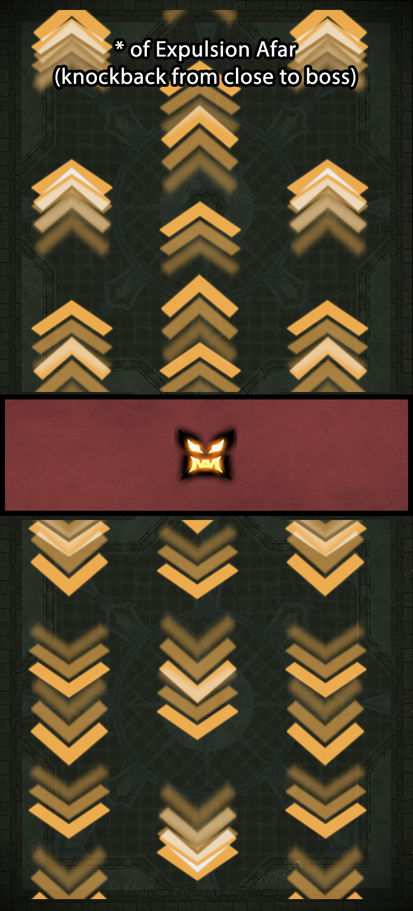
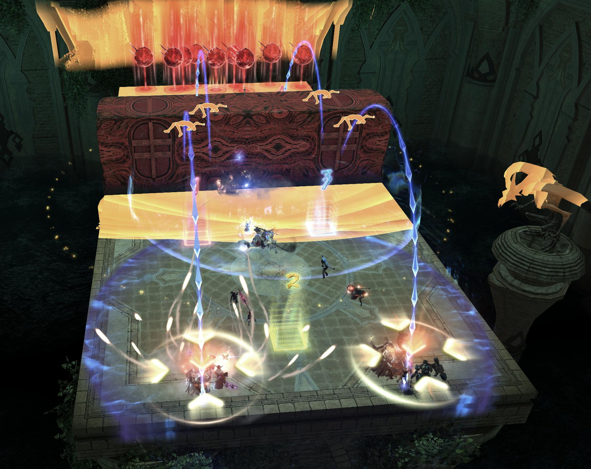
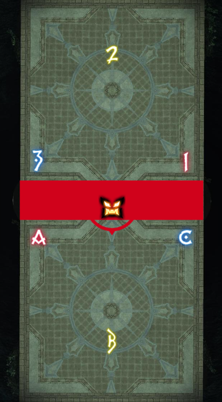

Demon Tablet
"Upon entering the Tower of Blood, intruders are met with this grim stone guardian, a variant of the demon walls that defended ancient Amdapor. As techniques for producing these soulkin developed, Amdapori artisans crafted ever more intricate automata, of which this specimen is a fine example. Covered in magical inscriptions, it appears optimized for preventing the ingress of threats into the tower."
Overview
Avoidable AoEs inflict Thrice-come Ruin. Three stacks inflict Doom and kill the player. Phantom Berserkers on high enmity should stack for Occult Chisel and use invulnerability.
Fight Timeline
Ray of Expulsion Afar / Dangers Near
- The boss will lift up and begin firing lasers on a single side of the arena.
- Go to the safe side and check if it's Afar or Near.
- Afar: go close to the boss and prepare for the knockback.
- Near: go far away from the boss past the halfway mark.
Demonograph of Expulsion Afar / Dangers Near
- The boss will lift up and summon 3× 4-person towers on each side of the arena.
- Half of the raid should traverse under the boss to the other side.
- Check if it's Afar or Near.
- Afar: go close to the boss and prepare for the knockback.
- Near: go far away from the boss past the halfway mark.
- On both sides, all 6 stack towers need at least 4 people in them.
Expulsion Afar / Dangers Near: Reference Images


Rotate Left / Right
- Point your camera at the boss.
- Check if the boss is casting Left or Right, then go to the opposite side.
- Casting Left? Go to the right side.
- Casting Right? Go to the left side.
- Go behind the boss and point your camera at it from behind.
- Check the next cast and again go to the opposite side.
- Casting Left? Go to the right side.
- Casting Right? Go to the left side.
Cometeor of Expulsion Afar / Dangers Near
- 8 players at random receive meteors above their heads.
- 4 players receive stack markers with a blue arrow.
- 2 arrows point north, 2 arrows point south.
- The stack arrows are fixed and do not rotate with character movement.
- 1 large meteor will statically spawn on one side of the arena.
- The 8 players with meteors go/stay to the side of the arena with the static meteor.
- The 4 stack markers split up, making sure they're on the correct side.
- The correct side is where their blue arrow points towards the boss.
- Everybody else goes on the side without the meteors.
- Check if it's Afar or Near.
- Afar: go close to the boss and prepare for the knockback.
- Near: go far away from the boss past the halfway mark.
- Those with meteors: drop them on the edge of the arena away from the boss, then stack with the stack markers on their side to jump over the boss to the safe side.
- Those on the safe side: stack with the stack markers on their side, then move out of the AoEs.


Summon: Adds Phase
- The boss will summon 3 adds on each side of the arena.
- Movement groups cross the boss.
- Handle the add that spawns close to your tower position.
- 2 smaller adds on the sides: Summoned Demon.
- 1 large add in the middle: Summoned Arch Demon.
- The Arch Demon has a buff called Dark Defenses that must be dispelled by a Ph. Timemage via Occult Dispel.
Summon: Statues & Stack Towers
- The boss will summon 2 statues on each side and 6 stack towers on a single side.
- It will then cast Gravity of Expulsion Afar / Dangers Near; complete the mechanic on the side with the stack towers.
- Check if it's Afar or Near.
- Afar: go close to the boss and prepare for the knockback.
- Near: go far away from the boss past the halfway mark.
- At least 12 people need to stand near either of the 2× statues, which casts Float on everyone close enough, allowing them to soak the 3× top-level stack towers (at least 4 in every tower).
- After the towers explode, Restore Gravity is cast. Find the corner of the arena furthest from the 2 statues and return to the ground there.


How Do We Resolve Mechanics?
Markers will be different per party, as shown in the picture below.
- Waymarks A & C and 1 & 3 are used for orientation on the Rotate Left / Right mechanics.
- Markers B and 2 mark the tower spots for your party.
Towers + add phase assignments:
- A, B and C: stay.
- 1, 2 and 3: move across / float.
The first tankbuster set is taken on the C waymarker using invulns to boost Berserker damage by stacking them.
